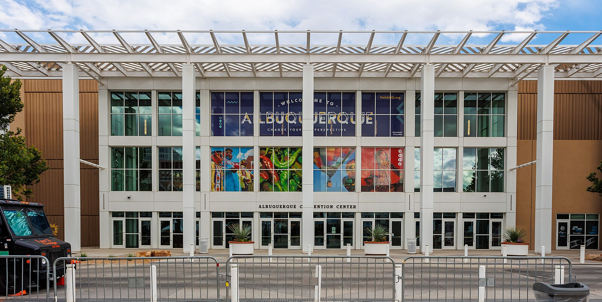

<style>
    .center-bold {
      text-align: center;
      font-weight: bold;
      font-size: 23px;
    }
</style>

<style>
  .welcome-text {
    text-align: center;
    font-size: 36px;
    color: #e95420;
  }
</style>


<section>
  <div class="container mt-2 mb-2">
    <div class="row">
      <div class="col">
        <h1>Q-CORE @ QCE’25 — A Joint Workshop of StableQ and DCHCQCS</h1>
      </div>
    </div>

    <p class="welcome-text"> <a href="https://sites.google.com/view/qcore25"> Q-Core </a></p>

    <div class="center-bold">
      September 3, 2025 @ Albuquerque, New Mexico, USA
    </div>
    
    <!--
    <div style="text-align:center;">
    <a href="https://meetattexas.com"></a>
    &nbsp;  &nbsp;  &nbsp;  &nbsp;
    </div>
    -->
    <div style="text-align:center;">
      <a href="https://www.visitalbuquerque.org/listing/albuquerque-convention-center/4227">
        
      </a>
      <p style="font-size: small; margin-top: 5px;">
        Photo by <a href="https://commons.wikimedia.org/wiki/User:AllenS">AllenS</a>,
        licensed under <a href="https://creativecommons.org/licenses/by/4.0/">CC BY 4.0</a>, via
        <a href="https://commons.wikimedia.org/wiki/File:Albuquerque_Convention_Center_3rd_Street_facade.jpg">Wikimedia Commons</a>
      </p>
    </div>


    <br>
    <div class="center-bold">
      The workshop is held in conjunction with the <strong>IEEE International Conference on Quantum Computing and Engineering (QCE 2025)</strong>, <strong>September 3, 2025</strong> @ <strong>Albuquerque, New Mexico, USA</strong>.
    </div>


    <br>
    <br>
    <p class="welcome-text"> Welcome to StableQ Workshop!</p>
  </div>
</section>
